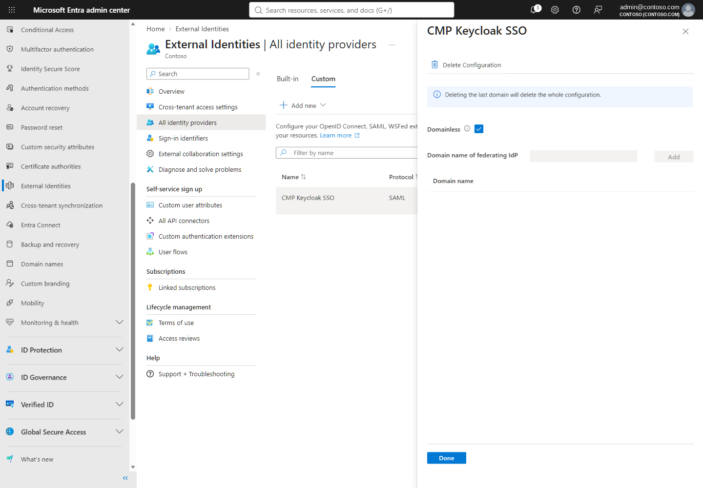

Microsoft Entra ID for Keycloak-federated guests
What Entra does with a Keycloak assertion: guest objects, SAML/WS-Fed federation, Domainless routing, redemption, Conditional Access, mandatory MFA and Azure RBAC.
Workforce tenant, external users#
Contoso's Entra tenant is a workforce tenant. People who authenticate at Keycloak are represented in it as B2B collaboration users. Federation does not replace guest accounts: "a guest account is created for the user in your workforce tenant directory regardless of the authentication or federation method used", and that object is what you grant access to, assign roles to and add to groups (Learn). Their user object has UserType = Guest (Learn).
SAML/WS-Fed identity provider federation#
- Federation lets external users "use their own IdP-managed accounts to sign in to your apps or resources ... without having to create new Microsoft Entra credentials" (Learn).
- Configuration lives in Entra ID › External Identities › All identity providers › Custom › Add new › SAML/WS-Fed; the minimum role is External Identity Provider Administrator (Learn).
- Entra needs three IdP values: Issuer URI, passive authentication endpoint (HTTPS only), and the signing certificate; a metadata URL is optional but strongly recommended for certificate renewal (Learn).
- The policy can take 5–10 minutes to take effect; do not redeem invitations during that window (Learn).
- Direct SAML/WS-Fed federation between two Entra tenants is not supported or recommended — Entra still uses native B2B in that case (Learn).
The domain problem, and Domainless#
Classic federation is domain-based: the email domain in the assertion is matched against the domain configured on the IdP. If they differ (for example a gmail.com user), sign-in fails with AADSTS5000819: SAML Assertion is invalid. Email address claim is missing or does not match domain from an external realm (Learn). Contoso's CMP users have arbitrary email domains, so the PoC uses Domainless federation:
| Behaviour | Domain-based | Domainless |
|---|---|---|
| How Entra picks the IdP | Email domain of the user | The IdP's Issuer URI |
| Email domain check | Must match a configured domain | Not performed |
| Invitation | Normal invite | Redirect URL must include domain_hint = Issuer URI |
| Limit | Many IdPs, one per domain set | Only one wildcard IdP per tenant |
After the first redemption "the user object is updated with the external IdP association", so later sign-ins go straight to the SAML IdP (Learn).


Because only one Domainless (wildcard) IdP can exist per tenant, an authorized administrator must inspect existing identity providers first and must not replace one that serves another workload.
Invitation redemption#
A new guest starts in PendingAcceptance and moves to Accepted after consenting to Contoso's privacy terms (Learn). When a guest selects Accept invitation, Entra follows a default redemption order: managed Entra account discovery; SAML/WS-Fed IdP whose domain matches; Google federation for gmail.com; an existing Microsoft account; email one-time passcode; otherwise creation of a Microsoft account (Learn). For verified domains you can move SAML/WS-Fed IdPs to the top of the order in cross-tenant access settings (Learn: Step 4).
Domainless routing depends on the domain_hint in the invitation redirect URL; without it, the default order above applies — a gmail.com address can be routed to Google or Microsoft-account flows instead of Keycloak. The PoC's single redemption attempt reached Microsoft's consumer sign-in route and did not complete; the invitation is still PendingAcceptance. Validate the exact redirect URL composition in G5/G8.
Conditional Access and MFA for these guests#
- For an external user from a non-Entra IdP, the resource tenant redirects to the IdP, validates the returned token, then evaluates its own Conditional Access policies (Learn).
- "For non-Microsoft Entra ID external users, the resource tenant is always responsible for MFA." Keycloak-side MFA is not trusted as Entra MFA (Learn).
- Authentication strengths apply only to external users who authenticate with Entra; for SAML/WS-Fed users use the Require MFA grant control (Learn).
- Mandatory MFA applies to Azure portal sign-ins (Phase 1, since October 2024) and to Create/Update/Delete through CLI, PowerShell, IaC and ARM REST (Phase 2, from 1 October 2025). It applies to B2B guests and to test tenants, with no opt-out (Learn).
Consequence for design: a guest who arrives from Keycloak will be asked to register and perform Entra MFA in the Contoso tenant before the Azure portal opens. Plan licensing and helpdesk for MFA registration of guests; a zero-prompt experience is not achievable for Azure portal access.
Authorization: Azure RBAC#
Authentication through Keycloak grants nothing in Azure. Access comes from Azure role assignments on the guest object, at the smallest scope that works. The PoC assigns the built-in Reader role (ID acdd72a7-3385-48ef-bd42-f606fba81ae7 (Learn: built-in roles)) on one resource group. The Well-Architected identity guidance applies directly: least privilege, built-in roles, narrow scope, and lifecycle for external identities (WAF SE:05).
Tenant-specific sign-in endpoints#
Federated guests should use endpoints that carry Contoso's tenant context, for example https://portal.azure.com/<tenant ID> (Learn). CMP builds tenant-scoped deep links of the form https://portal.azure.com/#@<tenant-id>/resource/subscriptions/<id>/overview.
Graph API surface#
| Operation | Resource | Least-privileged permission / role (Learn) |
|---|---|---|
| List SAML/WS-Fed IdPs (used by the PoC's read-only verify) | GET /directory/federationConfigurations/graph.samlOrWsFedExternalDomainFederation | Domain.Read.All; role External Identity Provider Administrator (Learn) |
| Invite a guest | POST /invitations | User.Invite.All; Guest Inviter / User Administrator (Learn) |
The v1.0 samlOrWsFedExternalDomainFederation resource documents issuerUri, passiveSignInUri, signingCertificate, preferredAuthenticationProtocol, metadataExchangeUri and a domains relationship (Learn). It does not document a Domainless property, so the PoC created the Domainless IdP in the admin center and uses Graph only to read and compare it.